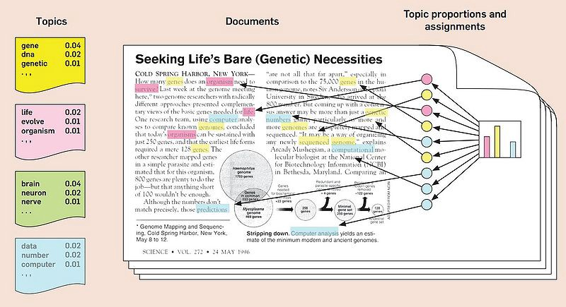

Topic Modeling (LDA)
Table of contents
Topic Modeling이란?
: 문서에서 주제(topic)을 추출하는 기법
- 관련이 높은 단어들끼리 묶어 토픽을 구성 → 단어의 조합으로 토픽의 핵심을 정의 가능
- 각 문서가 어떤 단어들로 구성되는지에 따라 가장 유사한 토픽으로 문서를 할당

(출처: medium.com/@connectwithghosh)
잠재 디리클레 할당(Latent Dirichlet Allocation, LDA)
: 대표적인 토픽 모델링 기법. 다수의 문서에서 잠재적으로 의미 있는 토픽을 발견하는 절차적 확률 분포 모델
- 단어들의 집합이 어떤 토픽들로 묶인다고 가정하고, 이 단어들이 각각의 토픽에 구성될 확률을 계산하여 결과 값을 토픽에 해당할 가능성이 높은 단어들의 집합으로 추출하는 방식
- 문서의 다양성에 비해 토픽의 수를 너무 적게 지정하거나, 하나의 문서에 다양한 주제가 혼용되어 있는 경우에는 토픽끼리 겹치는 결과가 나올 수 있다. 토픽 수를 정밀하게 지정하는 것이 중요!
(출처: bookdown.org/Maxine/tidy-text-mining/)
LDA의 수행 과정
- 토픽의 개수 k를 정한다
- 모든 문서의 모든 단어를 k개의 토픽 중 하나에 랜덤으로 할당한다
- 이 작업이 끝나면 각 문서는 토픽의 분포를 가지며, 토픽은 단어의 분포를 갖게 된다
- 모든 문서의 모든 단어에 대해 아래 과정을 반복:
- 단어 w 외에 다른 단어들은 모두 올바른 토픽에 할당되어 있다고 가정하고,
1) 단어 w가 속한 문서 doc1의 단어들이 어떤 토픽에 해당하는지,
2) 전체 문서에서 단어 w가 보통 어떤 토픽에 속해 있는지
두 가지 기준을 참고하여 w에 토픽을 재할당한다
- 단어 w 외에 다른 단어들은 모두 올바른 토픽에 할당되어 있다고 가정하고,
(참고자료: 딥러닝을 이용한 자연어 처리 입문)
(출처: donghwa-kim.github.io)
LDA: scikit-learn
- sklearn.decomposition.LatentDirichletAllocation을 사용
데이터 준비: 앱 리뷰
- google play store에서 ‘Netflix’의 2020.1.1~2021.5.28 사이의 1점 리뷰를 수집 (총 4242개)
## 직접 수집해 온 데이터를 dataframe으로 정리해 둠
review_df.head()
| Score | Content | Date | |
|---|---|---|---|
| 0 | 1 | 사기 | 2021-05-28 13:04:04 |
| 1 | 1 | 갤럭시s6입니다. 잘 되다가 한번씩 무한로딩 걸립니다. 근데 무한로딩 한번 걸리면… | 2021-05-28 11:30:37 |
| 2 | 1 | 로딩이 너무 느려서 자꾸 멈춰. 사운드는 나오는데 영상이 멈추는 경우도 있고, 그러다… | 2021-05-28 08:15:41 |
| 3 | 1 | 언제까지 로드 중만 뜰지 궁금함 빈센조 7화 보다가 다시 보려니까 무한로딩,, 내가… | 2021-05-28 01:12:33 |
| 4 | 1 | 아까까진 잘 되다 갑자기 튕기더니 그 다음부터는 폰을 끄고 다시 켜서 들어가도 디바이스… | 2021-05-27 19:37:03 |
Tokenization (한글 형태소 단위로 쪼개기)
import konlpy
import re
# tokenization 함수를 만들어둠
def tokenize_korean_text(text):
text = re.sub(r'[^,.?!\w\s]','', text) ## ,.?!와 문자+숫자+_(\w)와 공백(\s)만 남김 # 앞에 r을 붙여주면 deprecation warning이 안뜸 (raw string으로 declare)
okt = konlpy.tag.Okt()
Okt_morphs = okt.pos(text) # stem=True로 설정하면 동사원형으로 바꿔서 return
words = []
for word, pos in Okt_morphs:
if pos == 'Adjective' or pos == 'Verb' or pos == 'Noun': # 이 경우에는 형용사, 동사, 명사만 남김
words.append(word)
words_str = ' '.join(words)
return words_str
# review_df['Content']를 하나씩 tokenize해서 list로 저장
tokenized_list = []
for text in review_df['Content']:
tokenized_list.append(tokenize_korean_text(text))
print(len(tokenized_list))
print(tokenized_list[0])
4242
사기
+) 단어가 1-2개만 포함된 corpus는 삭제
drop_corpus = []
for index in range(len(tokenized_list)):
corpus = tokenized_list[index]
if len(set(corpus.split())) < 3: # 같은 단어 1-2개만 반복되는 corpus도 지우기 위해 set()을 사용
review_df.drop(index, axis='index', inplace=True)
drop_corpus.append(corpus)
for corpus in drop_corpus:
tokenized_list.remove(corpus)
review_df.reset_index(drop=True, inplace=True)
print(len(tokenized_list))
print(len(review_df))
3936
3936
Vectorization & LDA
from sklearn.feature_extraction.text import CountVectorizer
from sklearn.decomposition import LatentDirichletAllocation
1. vector화
#LDA 는 Count기반의 Vectorizer만 적용
count_vectorizer = CountVectorizer(max_df=0.1, max_features=1000, min_df=2, ngram_range=(1,2))
# 2개의 문서 미만으로 등장하는 단어는 제외, 전체의 10% 이상으로 자주 등장하는 단어는 제외
# bigram도 포함
feat_vect = count_vectorizer.fit_transform(tokenized_list)
print('CountVectorizer Shape:', feat_vect.shape)
CountVectorizer Shape: (3936, 1000)
2. 토픽모델링: LDA
lda = LatentDirichletAllocation(n_components=6) # 토픽 수는 6개로 설정
lda.fit(feat_vect)
LatentDirichletAllocation(batch_size=128, doc_topic_prior=None,
evaluate_every=-1, learning_decay=0.7,
learning_method='batch', learning_offset=10.0,
max_doc_update_iter=100, max_iter=10, mean_change_tol=0.001,
n_components=6, n_jobs=None, n_topics=None, perp_tol=0.1,
random_state=None, topic_word_prior=None,
total_samples=1000000.0, verbose=0)
3. 토픽별 연관어 출력
def display_topics(model, feature_names, num_top_words):
for topic_index, topic in enumerate(model.components_):
print('Topic #', topic_index)
# components_ array에서 가장 값이 큰 순으로 정렬했을 때, 그 값의 array index를 반환.
topic_word_indexes = topic.argsort()[::-1]
top_indexes=topic_word_indexes[:num_top_words]
# top_indexes대상인 index별로 feature_names에 해당하는 word feature 추출 후 join으로 concat
feature_concat = ' '.join([feature_names[i] for i in top_indexes])
print(feature_concat)
# CountVectorizer객체내의 전체 word들의 명칭을 get_features_names( )를 통해 추출
feature_names = count_vectorizer.get_feature_names()
# Topic별 가장 연관도가 높은 word를 10개만 추출
display_topics(lda, feature_names, 10)
Topic # 0
무료 가입 했는데 해지 아니 이용 환불 사용 계정 해서
Topic # 1
자막 영화 재생 영상 넷플릭스 소리 문제 나오고 기능 드라마
Topic # 2
로딩 자꾸 플립 진짜 화질 내고 무한 무한 로딩 보는데 입니다
Topic # 3
안됨 해주세요 노트 실행 깔아도 삭제 갑자기 어플 시청 다운
Topic # 4
영상 재생 해결 소리 해주세요 안되요 멈추고 제발 개선 에러
Topic # 5
로그인 실행 설치 어플 삭제 했는데 안되고 안되네요 해도 고객
LDA 시각화: pyLDAvis
-
pip install pyLDAvis로 설치해서 사용
import pyLDAvis.sklearn # sklearn의 ldamodel에 최적화된 라이브러리
pyLDAvis.enable_notebook()
vis = pyLDAvis.sklearn.prepare(lda, feat_vect, count_vectorizer)
pyLDAvis.display(vis)
(이미지를 클릭하면 html로 구현된 버전으로 확인 가능)
문서별 토픽 할당
1. 각 문서별로 가장 가까운 topic으로 할당
# 문서별로, 가장 확률이 높은 topic으로 할당해줌
doc_topic = lda.transform(feat_vect)
doc_per_topic_list = []
for n in range(doc_topic.shape[0]):
topic_most_pr = doc_topic[n].argmax()
topic_pr = doc_topic[n].max()
doc_per_topic_list.append([n, topic_most_pr, topic_pr])
doc_topic_df = pd.DataFrame(doc_per_topic_list, columns=['Doc_Num', 'Topic', 'Percentage'])
doc_topic_df.head()
| Doc_Num | Topic | Percentage | |
|---|---|---|---|
| 0 | 0 | 2 | 0.735108 |
| 1 | 1 | 1 | 0.455361 |
| 2 | 2 | 3 | 0.544513 |
| 3 | 3 | 0 | 0.241815 |
| 4 | 4 | 2 | 0.880451 |
→ 실제 review 내용과 join
doc_topic_df = doc_topic_df.join(review_df)
doc_topic_df.head()
| Doc_Num | Topic | Percentage | Score | Content | Date | |
|---|---|---|---|---|---|---|
| 0 | 0 | 2 | 0.735108 | 1 | 갤럭시s6입니다. 잘 되다가 한번씩 무한로딩 걸립니다. 근데 무한로딩 한번 걸리면… | 2021-05-28 11:30:37 |
| 1 | 1 | 1 | 0.455361 | 1 | 로딩이 너무 느려서 자꾸 멈춰. 사운드는 나오는데 영상이 멈추는 경우도 있고, 그러다… | 2021-05-28 08:15:41 |
| 2 | 2 | 3 | 0.544513 | 1 | 언제까지 로드 중만 뜰지 궁금함 빈센조 7화 보다가 다시 보려니까 무한로딩,, 내가… | 2021-05-28 01:12:33 |
| 3 | 3 | 0 | 0.241815 | 1 | 아까까진 잘 되다 갑자기 튕기더니 그 다음부터는 폰을 끄고 다시 켜서 들어가도 디바이스… | 2021-05-27 19:37:03 |
| 4 | 4 | 2 | 0.880451 | 1 | 무한로딩중……빠른 문제해결 부탁드립니다. | 2021-05-27 17:22:05 |
2. 토픽별 문서 수 계산
doc_topic_df.groupby('Topic')[['Doc_Num']].count()
| Topic | Doc_Num |
|---|---|
| 0 | 654 |
| 1 | 818 |
| 2 | 600 |
| 3 | 531 |
| 4 | 702 |
| 5 | 631 |
3. 토픽별로, 가장 높은 확률로 할당된 문서 top 3 확인
for topic in range(len(doc_topic_df['Topic'].unique())):
print('Topic #', topic, '-----------------------------')
top_pr_topics = doc_topic_df[doc_topic_df['Topic'] == topic].sort_values(by='Percentage', ascending=False)
print(top_pr_topics['Content'].iloc[0])
print(top_pr_topics['Content'].iloc[1])
print(top_pr_topics['Content'].iloc[2], '\n')
Topic # 0 -----------------------------
혼자 사용해서 베이직 요금제를 선택했는데 첫달 무료로 사용하면서 스탠다드로 쓸수 있게 해준다 해서 스탠다드로 한달 사용하고 그 다음달 베이직으로 바꿨는데 스탠다드 요금 나옴. 문의전화 하니까 데이터 상 내가 베이직으로 바꾼후 바로 스탠다드로 다시 바꿨다함 그런적 없다 하니 데이터상 그렇기 때문에 어쩔수 없다 함 베이직으로 바뀐시간과 스탠다드로 바뀐시간이 동일하며 초까지는 안나와서 모르겠으나 시간과 분이 일치하므로 몇초이내에 바꿨을거라 함. 난 베이직으로 바꾸고 스탠다드로 바로 바꾼적 없다 하니까 내가 베이직으로 바꾼후 베이직으로 바뀐걸 계정 들어가서 한번더 확인 안했으니 내 잘못이라 함. 나도 모르게 멤버십 바뀔수 있으니 결제될 때마다 베이직 스탠다드 확인하란 얘긴가요?
카드결재 주의하시고 해지도 조심하세요. 계정이 두개라 한개만 결재했는데 한달후보니 두개다 결재돼고 결재 5일전에 해지했는데 또 결재돼고 전화했더니 두계정결재 건은 내가 아직모르는 상태라고 상담사가 말도 안해주고 한번만 환불 가능하다고 요번 해지 결재건만 환불 처리 해줍디다. 한개정만 카드결재하고 한달 시청해는데 다른한개정은 정지상태인데 왜 결재돼냐고요.
오늘 넷플릭스 처음 이용 해봤는데 회원가입하고 첫 달 무료라면서 카드 등록하니까 바로 돈 빠져나가는 거 뭡니까? 당황해서 다급히 멤버십 해지.했는데도 돈 도 안들어오고... 사기 당해서 기분 나쁘네요.... 첫 달 무료라니 뭐라니 이런 거짓말은.하지 마세요... 당한 입장으로서 엄청 별로입니다...
Topic # 1 -----------------------------
넷플릭스에 올라오는 작품들은 만족스럽고 작품성이 뛰어난데 한글 번역은 왜 그따위인가요? 분명 본문은 그런 내용이 아닌데 혐오적 표현을 쓴다던가.. 아니 대체 영어를 한글로 번역하면서 부인은 남편한테 존대쓰고 남편은 부인한테 반말 쓰는 80년대적 발상은 어디서 나온 거죠?? 캐릭터 성격상 꼬박꼬박 존대 쓰고 반말 쓰는게 어색한데도 죽어도 놓질 못하시네요,, 이제는 영어 영화는 그냥 보고 스페인이나 프랑스 영화같은건 영어로 번역해서 보고 있는데.. 제발 그 글러먹은 사상좀 어디 버리고 와주세요 번역가님. 번역 신고 기능이 있어서 계속 신고할래도 본질이 글러먹은 것 같아서 평점 기능에 남겨봅니다
자체 제작하는 콘텐츠, 들여오는 영화나 드라마 모두 좋아요 콘텐츠 면에선 모두 만족합니다 그러나 자막이나 번역에 심각한 오의역이 존재하는 경우를 많이 보았어요. 예를 들어 드라마 글리 자막의 경우 주인공이 눈에 돌을 맞아 거의 실명할 뻔 하는 사건이 나오는데 이를 눈에 소금을 맞았다고 잘못 번역이 되어 있습니다.. 이럴 경우 영화나 드라마에 심각한 영향을 끼칠 것 같아요 또 이 정도의 오역이 아니어도 심심한 오류를 많이 보았습니다 자막이나 번역에 조금 더 힘써 주셨으면 합니다.
정말 잘 사용하고 있다가 최근에 업데이트 이후 v50s 듀얼스크린 재생이 되지를 않습니다. 영상 재생 중에 카카오톡이나 인터넷 검색 등 멀티 기능을 활용할 수 있었는데 지금은 환경설정 창만 내려도 영상이 정지가 되네요. 하루빨리 다시 예전처럼 영상이 지속적으로 재생될 수 있도록 조치해 주시면 대단히 감사드리겠습니다.
Topic # 2 -----------------------------
저도제트플립사용자입니다 제트플립 사용자는 전부 그러나봐요 저도 로딩만뜨고 넘어가질않는데 문제해결과 안내공지가 있어야하지않을까여? 왠 돈받고 저질서비스임?
제트플립 사용자인데 업데이트하고 갑자기 무한로딩... 못보고있는데 다른 리뷰들도 제트플립 안된다고 하네요... 돈은 돈대로 나가는데 보지는 못하고 이거 무슨 상황입니까?
저도 아래 리뷰처럼 제트플립 사용자인데 무한로드 반복하고 그 어느 컨텐츠 하나 재생이 안됩니다. 이거 뭐 며칠동안 돈날려먹으란것도 아니고 보상도 안바라니까 해결이나 빨리해줘요.
Topic # 3 -----------------------------
핸드폰을 시청후 껐을때 다른기기로 재시청을하면 기존에 시청했던 프로그램 시간대로 다시 재시청이 가능한데 어는 순간부터는 기기마다 시청했던 시간대로만 재시청이 가능해지네요 다른기기로 재시청시 기존에 시청했던 시간대로 시청할수있게끔 업데이트좀 부탁드려요 아니면 설정 방법좀 알려주세요
내가 찜한 콘텐츠 눌러도 확인해보면 추가 안되어있고 예전에는 찜한 콘텐츠삭제하는것도 됐었는데 지금은 왜 안될까요? 다 본건 지우고 새로 볼 것만 추가해두고 싶은데 삭제했다가 다시 깔아도 안되고 제가 뭘 어떻게 해요.
갤럭시 노트10+ 유저입니다. 501-109??오류메시지 뜨면서 앱실행이 2주째 안되고있고 매달 결재는 되는상황입니다. 업뎃하라해서 다했고.. 뭡니까 이게.. 환불이라도 해주던가 앱 제대로 관리하던가! 환불해줘요 !!!
Topic # 4 -----------------------------
아니 오늘 업데이트하라해서 했는데 30초마다 영상이 중지되네요ㅡㅡ 어제까지만 해도 아니 업뎃전까지만 해도 멀쩡했는데 왜 이러는거죠? 영상이 중지되서 다시 보려고 하면 재생 버튼은 눌리지도 않아요. 그래서 다시 창 끄고 영상 누르고 30초후에 중지. 또 끄고 영상 누르고. 개선좀해주세요 쉬는날 넷플 보려는데 오류때문에 시간 다날렸어요
영상이 자꾸 끊겨요 원래도 잠깐씩 끊긴 적이 있긴 했지만 오늘은 좀 심하네요... 아예 한 장면에서 계속 멈추고 10초 전이나 10초 후로 돌려도 영상 시간만 가고 앱을 아예 닫았다가 다시 들어가도 똑같아요 영상은 멈추고 소리만 들릴 때도 많고 너무 화나네요 ㅠ 고쳐 주세요 제발
아니 저만 이런가요? 한 일주일 전부터 영상 재생하면 한 10초?은 재생되다가 갑자기 화면 멈추고 소리만 나오네요ㅡㅡ 해결책좀요 제발ㅡㅡ
Topic # 5 -----------------------------
ㅡㅡ저기요 결제정보변경해서 결제했더니ㅡㅡ계정정보를불러올수없다길래 로그아웃했다다시로그인하려하니 로그인도안되고ㅡㅡ삭제했다 다시깔아도안되고 고객센터연결도안되고 홈페이지도안들어가지고 뭡니까?
넷플릭스에 접속할 수 없습니다? 방금 전까지만 해도 됐었는데.... 갑자기 접속이 안되길래 휴대폰 껐켰, 어플 삭제 후 재설치, 데이터 삭제 등 할 수 있는건 다 했는데 여전히 먹통이네요...
장난하는것도 아니고 결제하니까 안들어가집니다. 재설치 하려고 지웠다 설치중인데 설치도 계속 안되고 있네요. 뭐하자는건지 개선이 안되고 있는데 어쩌자는 겁니까?
토픽별 정리
- keywords, 문서 예시 등을 통해 토픽을 정의/설명하면 토픽 모델링의 결과에서 인사이트를 끌어내는 데 도움이 된다. 하지만 모든 토픽이 정확히 설명 가능하게 분류되지는 않을 수 있으므로 주의.
*Topic #0: “결제 관련 불만 사항 - 무료 가입 후 자동 결재, 해지/환불 절차에 대한 불만”
- keywords: 무료 가입 했는데 해지 아니 이용 환불 사용 계정 해서
- 문서 예시: “카드결재 주의하시고 해지도 조심하세요. 계정이 두개라 한개만 결재했는데 한달후보니 두개다 결재돼고 결재 5일전에 해지했는데 또 결재돼고”, “오늘 넷플릭스 처음 이용 해봤는데 회원가입하고 첫 달 무료라면서 카드 등록하니까 바로 돈 빠져나가는 거 뭡니까?”
*Topic #1: “자막 및 영상 기능 관련 불만 사항 - 자막 오류, 오역, 기능상의 결함에 대한 불만”
- keywords: 자막 영화 재생 영상 넷플릭스 소리 문제 나오고 기능 드라마
- 문서 예시: “넷플릭스에 올라오는 작품들은 만족스럽고 작품성이 뛰어난데 한글 번역은 왜 그따위인가요?”, “자막이나 번역에 심각한 오의역이 존재하는 경우를 많이 보았어요.”, “업데이트 이후 v50s 듀얼스크린 재생이 되지를 않습니다.”
*Topic #2: “무한 로딩 문제 - 특정 기종(제트플립) 관련 문제가 다수”
- keywords: 로딩 자꾸 플립 진짜 화질 내고 무한 무한 로딩 보는데 입니다
- 문서 예시: “제트플립 사용자는 전부 그러나봐요 저도 로딩만뜨고 넘어가질않는데”, “제트플립 사용자인데 업데이트하고 갑자기 무한로딩…”
*Topic #3: “다양한 주제의 불만 사항 및 요청 사항”
- keywords: 안됨 해주세요 노트 실행 깔아도 삭제 갑자기 어플 시청 다운
- 문서 예시: “다른기기로 재시청시 기존에 시청했던 시간대로 시청할수있게끔 업데이트좀 부탁드려요”, “내가 찜한 콘텐츠 눌러도 확인해보면 추가 안되어있고 예전에는 찜한 콘텐츠삭제하는것도 됐었는데 지금은 왜 안될까요?”
- ※ 찜하기, 알림, 이어보기 등 특정 기능 관련, 앱 실행 오류 관련… 다양한 주제가 mix된 토픽 - 하나로 정의하기 어렵다
*Topic #4: “영상 재생 관련 불만 사항 - 재생 경험에서의 불쾌감”
- keywords: 영상 재생 해결 소리 해주세요 안되요 멈추고 제발 개선 에러
- 문서 예시: “아니 오늘 업데이트하라해서 했는데 30초마다 영상이 중지되네요”, “영상이 자꾸 끊겨요 원래도 잠깐씩 끊긴 적이 있긴 했지만 오늘은 좀 심하네요”
- Topic #2와 유사 (pyLDAvis로 시각화한 Intertopic Distance Map에서도 유사하게 나타남)
*Topic #5: “접속 장애 관련 불만 사항 - 접속 불가, 로그인 불가 등의 문제”
- keywords: 로그인 실행 설치 어플 삭제 했는데 안되고 안되네요 해도 고객
- 문서 예시: “넷플릭스에 접속할 수 없습니다? 방금 전까지만 해도 됐었는데”, “장난하는것도 아니고 결제하니까 안들어가집니다. 재설치 하려고 지웠다 설치중인데 설치도 계속 안되고 있네요”
LDA: gensim
- gensim.models.ldamodel.LdaModel을 사용
- gensim: 자연어 처리에 특화된 라이브러리
## sklearn을 활용한 LDA에서와 같은 데이터를 사용
review_df.head()
| Score | Content | Date | |
|---|---|---|---|
| 0 | 1 | 사기 | 2021-05-28 13:04:04 |
| 1 | 1 | 갤럭시s6입니다. 잘 되다가 한번씩 무한로딩 걸립니다. 근데 무한로딩 한번 걸리면… | 2021-05-28 11:30:37 |
| 2 | 1 | 로딩이 너무 느려서 자꾸 멈춰. 사운드는 나오는데 영상이 멈추는 경우도 있고, 그러다… | 2021-05-28 08:15:41 |
| 3 | 1 | 언제까지 로드 중만 뜰지 궁금함 빈센조 7화 보다가 다시 보려니까 무한로딩,, 내가… | 2021-05-28 01:12:33 |
| 4 | 1 | 아까까진 잘 되다 갑자기 튕기더니 그 다음부터는 폰을 끄고 다시 켜서 들어가도 디바이스… | 2021-05-27 19:37:03 |
Tokenization
import konlpy
import re
def tokenize_korean_text(text):
text = re.sub(r'[^,.?!\w\s]','', text)
okt = konlpy.tag.Okt()
Okt_morphs = okt.pos(text)
words = []
for word, pos in Okt_morphs:
if pos == 'Adjective' or pos == 'Verb' or pos == 'Noun':
words.append(word)
## word를 이어붙인 string 형태가 아닌 word의 list를 return해주는 게 sklearn lda 준비 과정과의 차이
return words
tokenized_list = []
for text in review_df['Content']:
tokenized_list.append(tokenize_korean_text(text))
print(len(tokenized_list))
print(tokenized_list[1])
4242
['사기']
+) 단어가 1-2개만 포함된 corpus는 삭제
drop_corpus = []
for index in range(len(tokenized_list)):
corpus = tokenized_list[index]
if len(set(corpus)) < 3: # corpus 자체가 list 형태인게 sklearn lda 준비 과정과의 차이
review_df.drop(index, axis='index', inplace=True)
drop_corpus.append(corpus)
for corpus in drop_corpus:
tokenized_list.remove(corpus)
review_df.reset_index(drop=True, inplace=True)
Vectorization & LDA
# bigram 생성에 필요한 library
from gensim.models import Phrases
from gensim.models.phrases import Phraser
# vectorize & lda에 필요한 library
from gensim import corpora
from gensim.models.ldamodel import LdaModel
1. bigram을 포함하기 위한 추가 세팅
# Build the bigram models
bigram = Phrases(tokenized_list, min_count=4, threshold=10)
bigram_mod = Phraser(bigram)
# See example
print(bigram_mod[tokenized_list[0]])
['갤럭시', '입니다', '잘_되다가', '한번', '무한_로딩', '걸립니다', '무한_로딩', '한번', '걸리면', '한', '주간', '넷플릭스', '앱', '아예', '켜지지가', '않습니다', '원인', '모르겠고', '이럴', '때', '피씨', '봐', '야해서', '번거롭습니다']
-
gensim.models.Phrases: 자동으로 ngram colloation을 detect하는 모델. Phrases를 반복 사용하면 bigram뿐 아니라 trigram과 그 이상도 생성 가능
- min_count: 최소한 min_count보다 많이 등장한 token이 대상
- threshold: default는 10, 값이 작을수록 덜 빈번한 단어 조합이더라도 bigram으로 생성해준다. 아주 빈번하게 사용되는 최소한의 bigram만 만들고자 하면 threshold를 높여주면 된다
# tokenized_list의 모든 문서에 대해 bigram을 생성해줌
words_bigram = [bigram_mod[doc] for doc in tokenized_list]
2. vector화
dictionary = corpora.Dictionary(words_bigram) # 각 단어에 번호를 할당해줌
# bigram 포함하는 과정을 생략하고 싶으면, 그냥 바로 여기에 tokenized_list를 넣어주면 됨
dictionary.filter_extremes(no_below=2, no_above=0.05)
# 2개의 문서 미만으로 등장하는 단어는 제외, 전체의 5% 이상으로 자주 등장하는 단어는 제외
corpus = [dictionary.doc2bow(text) for text in words_bigram]
print(corpus[0]) # 첫번째 corpus를 테스트로 출력: 몇 번째 단어가 몇 번 나왔는지 저장되어 있음
[(0, 1), (1, 1), (2, 1), (3, 1), (4, 1), (5, 2), (6, 1), (7, 1), (8, 1), (9, 1), (10, 1), (11, 1), (12, 1), (13, 1), (14, 1), (15, 1), (16, 1), (17, 2)]
3. LDA 모델 학습 & 연관어 확인
ldamodel = LdaModel(corpus, num_topics=6, id2word=dictionary, passes=20, iterations=500) # 토픽 수: 6
ldamodel.print_topics(num_words=7) # num_words=10이 default
[(0,
'0.011*"로그인" + 0.006*"안" + 0.006*"고객_센터" + 0.006*"환불" + 0.006*"해도" + 0.005*"하면" + 0.005*"잘"'),
(1,
'0.009*"앱_실행" + 0.009*"안되네요" + 0.008*"이" + 0.008*"결재" + 0.008*"다운" + 0.007*"안되요" + 0.007*"디바이스_오류"'),
(2,
'0.014*"뭐" + 0.010*"가입" + 0.010*"영화" + 0.009*"했는데" + 0.008*"무료" + 0.007*"어떻게" + 0.006*"해지"'),
(3,
'0.022*"화질" + 0.017*"자막" + 0.008*"영화" + 0.007*"제발" + 0.006*"없고" + 0.006*"볼" + 0.005*"생각"'),
(4,
'0.009*"무한_로딩" + 0.008*"삭제" + 0.007*"안됩니다" + 0.007*"입니다" + 0.007*"해결" + 0.007*"로딩" + 0.007*"문제"'),
(5,
'0.011*"돈_내고" + 0.009*"안" + 0.009*"제발" + 0.008*"보는데" + 0.006*"자막" + 0.006*"문제" + 0.006*"아니고"')]
-
LdaModel의 파라미터:
- passes: Number of passes through the corpus during training. (default: 1)
- iterations: Maximum number of iterations through the corpus when inferring the topic distribution of a corpus. (default: 50)
- corpus 수가 적으면 passes를 높여주는 것이 유용할 수 있고, 시간만 충분하다면 iterations를 높여주면 더 학습이 잘 된다 (iterations가 낮으면 제대로 수렴하기 전에 학습이 종료될 수 있음)
LDA 시각화: pyLDAvis
import pyLDAvis.gensim # gensim의 ldamodel에 최적화된 라이브러리
vis = pyLDAvis.gensim.prepare(ldamodel, corpus, dictionary)
pyLDAvis.display(vis)
(이미지를 클릭하면 html로 구현된 버전으로 확인 가능)
문서별 토픽 할당
doc_per_topic_list = []
for n in range(len(corpus)):
doc_topic = ldamodel[corpus[n]]
doc_topic = sorted(doc_topic, key=lambda x: (x[1]), reverse=True)
topic_most_pr = doc_topic[0][0]
topic_pr = doc_topic[0][1]
doc_per_topic_list.append([n, topic_most_pr, topic_pr])
doc_topic_df = pd.DataFrame(doc_per_topic_list, columns=['Doc_Num', 'Topic', 'Percentage'])
# 실제 review 내용과 join
doc_topic_df = doc_topic_df.join(review_df)
doc_topic_df.head()
| Doc_Num | Topic | Percentage | Score | Content | Date | |
|---|---|---|---|---|---|---|
| 0 | 0 | 4 | 0.959966 | 1 | 갤럭시s6입니다. 잘 되다가 한번씩 무한로딩 걸립니다. 근데 무한로딩 한번 걸리면… | 2021-05-28 11:30:37 |
| 1 | 1 | 2 | 0.955639 | 1 | 로딩이 너무 느려서 자꾸 멈춰. 사운드는 나오는데 영상이 멈추는 경우도 있고, 그러다… | 2021-05-28 08:15:41 |
| 2 | 2 | 0 | 0.836514 | 1 | 언제까지 로드 중만 뜰지 궁금함 빈센조 7화 보다가 다시 보려니까 무한로딩,, 내가… | 2021-05-28 01:12:33 |
| 3 | 3 | 1 | 0.976007 | 1 | 아까까진 잘 되다 갑자기 튕기더니 그 다음부터는 폰을 끄고 다시 켜서 들어가도 디바이스… | 2021-05-27 19:37:03 |
| 4 | 4 | 4 | 0.83286 | 1 | 무한로딩중……빠른 문제해결 부탁드립니다. | 2021-05-27 17:22:05 |